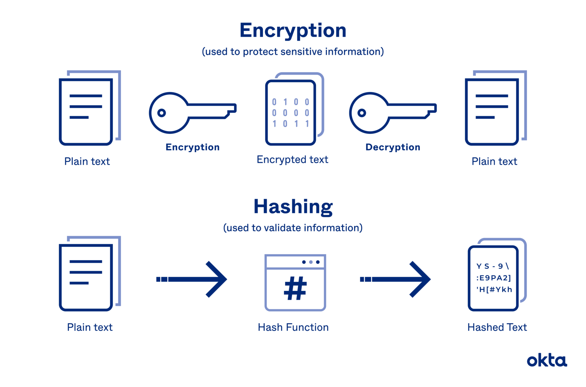

Как работает блокчейн?
Как работает блокчейн?Блокчейн представляет собой распределённый реестр, который хранит данные о транзакциях в виде блоков. Каждый блок содержит уникальный код (хэш), связывающий его с предыдущим, тем самым создавая защищённую цепочку. Как работают смарт-контракты?Смарт-контракты — это автоматизированные контракты, которые выполняются при выполнении определённых условий. Они обеспечивают надёжность сделок без необходимости посредников, так как записаны в блокчейн и не могут быть изменены. Роль хэширования в блокчейнеХэширование — это процесс, который преобразует данные в уникальный строковый код. Хеши используются для защиты информации в блоках и обеспечения их связи, что делает систему безопасной от подделок. Зачем нужны майнеры?Майнеры проверяют и добавляют новые блоки в блокчейн, решая сложные вычислительные задачи. В качестве вознаграждения они получают криптовалюту, что стимулирует их поддерживать работу сети. Безопасность блокчейнаБлокчейн обладает высокой устойчивостью к атакам благодаря децентрализованной структуре. Изменение информации требует контроля большинства узлов сети, что делает подобные атаки практически невозможными. |
 |